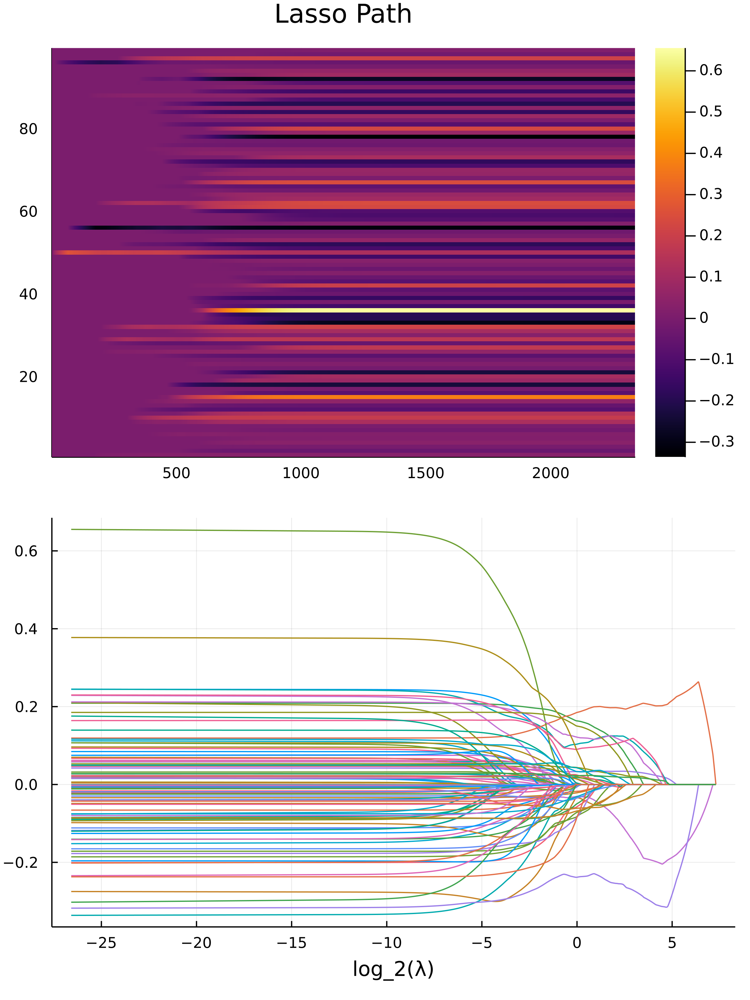

Intro
Here is a list of content that we will go through in this website.
- The Lasso Problem
- Quadratic Programming
- Proximal Gradient Descend
- Julia Programming Language for Speed: Home Made Accelerated Proximal Gradient
- Results
- Epilogue
A Summary: What, Why, How
I want to do the lasso path problem by formulating it as a quadratic programming problem, and then try solving it using the JuMP.jl optimization framework with the COSMO.j ADMM conic solver. However it turns out to be very slow, even with everything precompiled. I tried the following things and it didn't rescue it:
- Using primal variable warm start for the solver
- Less Tolerance
- Build the model in
JuMP.jlonce and then modify the objective, reduce resource overhead on creating new model for each $\lambda$
Then I suddenly remebered that, Proximal gradient can be directly applied to the Primal, Dual of the non-smooth objective function, and achieve convergence as good as $\mathcal{O}(\exp(-k))$.
With some good programming skill, I am able to get it working very efficiently, more precisely, 500 times speed up.
Major Idea and Lessons
Don't use Jump.jl framework it's slow. The reason is due to repeated computations of $A^TA$ of the data matrix, and reallocated memory each time it does it, which is just my hypothesis based on the memory usage. Although proximal gradient is fast and can handle all type of reguarized solution, but there are some details missing for a accurate predictions on the importance of predictors.
The Lasso Problem
Here we use a basic regression problem without biases, then the lasso is just a regularizing the one-norm of the weights of the model. Mathematically we are solving:
$$ \arg\min_x \left\lbrace \Vert Aw - b\Vert_2^2 + \lambda \Vert w\Vert_1 \right\rbrace $$
Assume that the size of the data matrix $A$ has zero mean on all the columns, and it's a $n\times d$ matrix, having $n$ rows of instances, where each instances has $d$ features.
Intutions
By solving this optimization problem with different value of $\lambda$, we are subjecting the model to produce weights for predictors that are mostly zero. Such a strategy will make sparse models, and only the important predictors will remain.
As the size of $\lambda$ increases, the model is forced to set the weights for these 2 type of predictors to zero:
- Predictors that has collinearity with other predictors.
- Predictors that naturally has small weigths to it.
The Lasso Path
For the 2norm loss function, the lambda value such that it sets all the weights of the predictors to zero is given as:
$$ \lambda_{\max} = \max_{k=1,...,d} \left\lbrace 2 \left| \sum_{i = 1}^{n} A_{i, k} \left( b_i - \left( \frac{1}{n} \sum_{j=1}^{i} b_i \right) \right) \right| \right\rbrace $$
The proof is skipped and I will give a hint about it later.
By choosing $\lambda_{\max}$ to be this value, and then we decrease the value of $\lambda$ geometrically, producing a sequence of weights for each value of $\lambda$, and then each of the weights on a line, for all of the weights, this is called the Lasso Path.
Quadratic Programming
Direct Formulation
The lasso problem from above can be simplified into a quadratic programming problem as the following:
$$ \arg\min_w \left\lbrace \lambda \mathbf{1}^T\eta + \Vert Aw - b\Vert_2^2 : -\eta \le x \le \eta \right\rbrace $$
Where the variable $\eta$ is a vector that has the same size as the vector $w$. This is a quadratic programming problem.
The Dual Problem
Another way is to use the Dual problem of the lasso, we will skip the dualization process and just state the results here:
$$ \sup_{\Vert A^Tz\Vert_\infty \le \lambda} \left\lbrace -z^Tb - \frac{1}{2}\Vert z\Vert^2 \right\rbrace $$
And we would also need the Lagrangian for it to determine the solutions for the primal.
Under the context of the quadratic programming problem, we will need to change the $\lambda$ repreatedly, hence a warm start using the preivous primal solution calculated with the nearest value of $\lambda$ will speed up the algorithm.
Code, Tools, Implementations and Practical Barriers
A quadratic programming problem can be solved efficiently with the Interior Points method, let's see if I have the time to implement this. For this project, I use the JuMP.jl as the optimization interface and COSMO.jl as the underlying solver, which is an ADMM based Conic Programming solver from Standford University. It's applicable for quadratic objective and convex quadrtic constraints, and a lot of other constraints such as Semi-Definitness of the variable matrix.
A Statement of the Challenges and Problems
The speed of solving from using theJuMP.jlwithCOSMO.jlwas disappointing, due to too many memory allocations, terrible speed at loading up the packages, and assigning variable. In addition, it has numerical instability that is visiable on the plot of the lasso path plot, manifested as tiny artifects on the plos.
Here is what I should do in the future if I were to address these problem:
- Directly Communicate with the solver such as
COSMO.jlinstead of using any kind of stupid interface such asJuMP.jl, if, heavy modifications of the optimization problems are involved -
Make my own interior points solver, which is not hard. However, I am also giving up development time, and other valuable features and generality provided by the conic Solver, such as the
COSMO.jl.
By Passing the Problem all Together
This leads to the next part of the article. There is another state of the art solution that is easier to implement, and when implemented in julia, it produces up to 500 times speed up compare to the JuMP.jl + COSMO.jl approach . It's called the Proximal Gradient Descend Method.
Proximal Gradient Descend
It's gradient descend that can handle the sum of 2 convex functions $g(x) + h(x)$ where $h(x)$ is non-smooth but convex. In this section we will derive everything we need for th Lasso Path problem cause it's not that hard to be honest. In addition, we will make the assumption that the function $g(x)$ is smooth convex, and it's so smooth that it can be bounded above by the quadratic with convexity of $\beta$, in the sense that: $$ g(y) \le (y - x)^T\nabla g(x) + \frac{\beta}{2}\Vert y - x \Vert_2^2 $$ Which then we have: $$ g(y) + h(y) \le g(x) + (y - x)^T\nabla g(x) + \frac{\beta}{2}\Vert y - x\Vert_2^2 + h(y) $$
Defintion: The Proximal Gradient
$$ \underset{h, t}{\text{prox}}( z ) = \arg\min_x \left\lbrace \frac{1}{2t} \left\Vert x - z \right\Vert^2 + h(x) \right\rbrace $$
The proximal operator find the closest point, it take the non-smooth function $h(x)$ into considerations. The proximal operator is paramaterized by a parameter $t$.
Claim 1
To get on step for proximal gradient descend, we need to minmize this, which will cause a proximal operator to arise.
$$ \arg\min_y \left\lbrace g(x) + \nabla g(x)^T(y - x) + \frac{\beta}{2} \Vert y - x\Vert + h(y) \right\rbrace \tag{1} $$
In which, we are trying to minimize the parabolic curve with convexity $\beta$, while also keeping the non-smooth function on the right hand side.
proof
$$ \begin{aligned} & g(x) + \nabla g(x)^T(y - x) + \frac{\beta}{2} \Vert y - x\Vert^2 \\ =& g(x) + \nabla g(x)^T x - \nabla g(x)^T x + \frac{\beta}{2}\Vert x\Vert^2 + \frac{\beta}{2} \Vert x\Vert^2 -\beta y^T x + h(y) \\ =& \left( g(x) - \nabla g(x)^Tx + \frac{\beta }{2} \Vert x\Vert^2 \right) + \underbrace{\left( \nabla g(x) - \beta x \right)^T y + \frac{\beta}{2} \Vert y\Vert + h(y)}_{\text{Optimize This!}} \end{aligned}\tag{2} $$
We choose to optimize the part where, parameter $y$ is involved.
$$ \begin{aligned} & \arg\min_y \left\lbrace g(x) + \nabla g(x)^T(y - x) + \frac{\beta}{2} \Vert y - x\Vert^2 \right\rbrace \\ =& \arg\min_y \left\lbrace \underbrace{\left( \nabla g(x) - \beta x \right)^T y + \frac{\beta}{2} \Vert y\Vert^2}_{\text{the smooth part}} + h(y) \right\rbrace \end{aligned}\tag{3} $$
Only the smooth part is able to be optimized in this case, now let's focus on that part.
$$ \begin{aligned} \underbrace{\left(\nabla g(x) - \beta x\right)^T}_{b} y + \underbrace{\frac{\beta}{2}}_{a} \Vert y\Vert =& b^Ty + a \Vert y\Vert^2 \\ =& a \left( \frac{b^T}{a}y + \Vert y\Vert^2 \right) \\ =& a \left( \frac{b^T}{a}y + \Vert y\Vert^2 + \left\Vert\frac{b^T}{2a}\right\Vert^2 - \left\Vert \frac{b^T}{2a} \right\Vert^2 \right) \\ =& a \left( \underbrace{\left\Vert y + \frac{b}{2a} \right\Vert^2}_{\text{Optimize This part}} - a \left\Vert \frac{b^T}{2a} \right\Vert^2 \right) \\ \left\Vert \frac{b}{2a} + y \right\Vert^2 =& \left\Vert \frac{\nabla g(x) - \beta x}{\beta} + y \right\Vert^2 \\ =& \left\Vert y - \left(x - \frac{\nabla g(x)}{\beta}\right) \right\Vert^2 \end{aligned}\tag{4} $$
What we did is called: Completing the square, just some grade school math, and then, we susbtitute it back to the original expression and have: $$ \begin{aligned} =& \arg\min_y\left\lbrace \left( \nabla g(x) - \beta x \right)^T y + \frac{\beta}{2} \Vert y\Vert + h(x) \right\rbrace \\ =& \arg\min_y\left\lbrace \frac{\beta}{2}\left\Vert y - \left(x - \frac{\nabla g(x)}{\beta}\right) \right\Vert^2 + h(x) \right\rbrace \\ =& \underset{h, t}{\text{prox}} \left(x - \frac{\nabla g(x)}{\beta}\right) \text{ where: } t= \frac{1}{\beta} \end{aligned}\tag{5} $$
Therefore, the minimization along the parabolic with the non-smooth convex function is the same as solving the above proximal operator. The proximal opeartor should be anchored at $x = x^{(k)}$, the guess from the previous iteration, while solving for the next step in the gradient descend. This can be generalized to ANY step sizes.
Formulation of the Algorithm
In our case, we will be using Nesterov Accelerated Gradient, with the Proximal Operator, giving us:
$$ \begin{aligned} & x_{k + 1} = \underset{1/\beta, h}{\text{prox}}\left( y_k - \frac{1}{\beta}\nabla f(y_k) \right) \\ & t_{k + 1} = \frac{1 + \sqrt{1 + 4t_k^2}}{2} \\ & y_{k + 1} = x_{k + 1} + \frac{t_k - 1}{t_{k + 1}}(x_{k + 1} - x_k) \end{aligned} $$
Proximal Operator for the L1-Reguarlization
The proximal solution for the nonsmooth part is the same as this problem:
$$ \arg\min_x \left\lbrace \frac{1}{2t} \Vert x - y \Vert^2 + \lambda\Vert x\Vert_1 \right\rbrace $$
Our objective is to solve this. Consider this:
$$ \begin{aligned} x^+=& \arg \min_x \left\lbrace \frac{1}{2t} \Vert x - y \Vert^2 + \lambda\Vert x\Vert_1 \right\rbrace \\ =& \arg\min_{x_1, x_2 \cdots x_n} \left\lbrace \sum_{i = 1}^{n}\left( \frac{1}{2t} (x_i - y_i)^2 + \lambda |x_i| \right) \right\rbrace \\ \implies x^+_i =& \arg\min_{x_i}\left\lbrace \frac{1}{2t}(x_i - y_i)^2 + \lambda |x_i| \right\rbrace \end{aligned} $$
We need to solve for each element of $x_i$, and will need to discuss them by cases because $|x_i|$ is not smooth.
Assuming that $x_i \neq 0$, then:
$$ \begin{aligned} \bar{\partial}\left[ \frac{1}{2t}(x_i - y_i)^2 + \lambda |x_i| \right] &= 0 \\ \frac{1}{t}(x_i - y_i) \pm \lambda &= 0 \\ x_i - y_i \pm \lambda t &= 0 \\ x_i &= y_i \mp \lambda t \end{aligned} $$
Take notice that, when
$$ \begin{aligned} x_i \ge 0 &\implies y_i - \lambda t \ge 0 \implies y_i \ge \lambda t \\ x_i \le 0 &\implies y_i + \lambda t \le 0 \implies y_i \le -\lambda t \end{aligned} $$
And if $x_i = 0$, then we will need subgradient, and we have:
$$ \begin{aligned} \partial\left[ \frac{1}{2t}(x_i - y_i)^2 + \lambda |x_i| \right] &\ni 0 \\ \frac{1}{t}(x_i - y_i) + [-\lambda, \lambda] &\ni 0 \\ x_i - y_i + [-t \lambda, t \lambda] &\ni 0 \\ \text{set }x_i &= 0 \\ y_i \in [-t \lambda, t\lambda] \end{aligned} $$
So basically let:
$$ f(y) = \begin{cases} y - \lambda t & y \ge \lambda t \\ y + \lambda t & y \le -\lambda t \\ 0 & y \in [-t \lambda, t\lambda] \end{cases} $$
Then
$$ x^+ = f \bullet(y) $$
Where $\bullet$ saying that, the function has been vectorized on each element of the input vector.
up to this point, we have solved the proximal operator for all of the L1 Norm Regularized regression problem, the function vectorized function $f$ is the solution.
Julia Programming Language For speed: The Home-made Proximal Gradient Descned Method
The julia programming language supports JIT interpreter, it it compiles to code using LLVM. It uses dynamic dispatch and both static and dynamic typing.
The key to speed is to restrict the type for the functions we use, so that when the function is called, it will only be compiled for one specific type by the JIT (Which itself made the function, giving it shorter assembly code), and then it's never compiled again, results in faster execution time.
Here is the code implementations of what we talked about:
mutable struct ProximalGradient
"""
Dynamical, functional, keeps references to detailed implementation
functions.
"""
g::Function
gradient::Function
prox::Function
h::Function
β::Float64 # For beta convex function.
tol::Float64
maxItr::Int64
solutionDim::Tuple
function ProximalGradient(tol::Float64, maxItr::Int64)
this = new()
this.tol = tol
this.maxItr = maxItr
return this
end
end
function OptimizeProximalGradient(
this::ProximalGradient,
warm_start::Union{Array, Nothing}=nothing
)::Matrix
"""
Implement FISTA, Accelerated Proximal Gradient, copied from my HW.
"""
tol = this.tol
max_itr = this.maxItr
if warm_start === nothing
warm_start = zeros(this.solutionDim)
end
x = warm_start
Δx = Inf
y = x
t = 1
∇f = this.gradient(y)
δ = 1/this.β # stepsize
xNew = similar(x)
yNew = similar(y)
while Δx >= tol && max_itr >= 1
xNew = x - δ*∇f
this.prox(xNew, δ)
tNew = (1 + sqrt(1 + 4t^2))/2
yNew .= xNew
yNew += ((t - 1)/tNew)*(xNew - x)
∇f .= this.gradient(yNew)
Δx = norm(xNew - x, 1)/norm(x, 1)
t = tNew
x = xNew
y = yNew
max_itr -= 1
end
if max_itr == 0
println()
Warn("Maximal iteration $(this.maxItr) reached for Proximal gradient. ")
@assert norm(x, Inf) != Inf "Solution is infinite, something blowed up."
Warn("It will be bumped up by 200% more and then we try again.")
this.maxItr = 2*this.maxItr
return OptimizeProximalGradient(this, warm_start)
end
return x
end
### ----------------------------------------------------------------------------
### ============================================================================
### Lasso Proximal Operator
### ============================================================================
function L1LassoProximal!(y::Union{Vector, Matrix}, t::Float64, λ::Float64)
"""
Textbook definition of the L1 Lasso proximal operator.
"""
return map!(y, y) do yi
if yi > λ*t
return yi - λ*t
elseif yi < -λ*t
return yi + λ*t
else
return 0
end
end
end
### ----------------------------------------------------------------------------
### ============================================================================
### The 2 Norm loss function with L1 regularization
### ============================================================================
function BuildPG2NormLasso(
A::Matrix,
b::Matrix,
λ::Float64,
tol::Float64=1e-5,
max_itr::Int64=1000
)::ProximalGradient
"""
Given matrix A, vector b, and λ the regularization perameter,
this will build an instance of ProximalGradient.
* Use Lambdas to capture variables references
* A factory methods
! Pass copy of matrices will be better.
"""
@assert size(b, 2) == 1 "Expect vector b in the"*
" shape of (n, 1) but it turns out to be $(size(b))"
@assert size(b, 1) == size(A, 1) "Expect the size of the matrix to match "*
"the vector but it turns out to be A is in $(size(A)), and b is $(size(b))"
ATA = A'*A
ATb = A'*b
β = 4*opnorm(ATA) # convexity from spectral norm.
t = 1/β
f(x) = norm(A*x - b)^2
dg(x) = 2(ATA*x - ATb)
# ======= build ==================================
proxVectorized(y, t) = L1LassoProximal!(y, t, λ)
this = ProximalGradient(tol, max_itr)
this.g = f
this.gradient = dg
this.prox = proxVectorized
this.β = β
this.solutionDim = (size(A, 2), size(b, 2))
this.h = (x) -> norm(x, 1)
return this
end
function ChangeProximalGradientLassoλ!(this::ProximalGradient, λ::Float64)
"""
Change the proximal operator for a different λ
"""
this.prox = (y, t) -> L1LassoProximal!(y, t, λ)
end
Julia Package
The whole project is developed as a julia package, the repos for the package is LassoPath.jl.
Results: Impressive
Results are carried out with the crime dataset from UCI machine learning dataset. The link to the data set is here.
Under around 5 seconds, on my machine with a Ryzen 4900HS, the equivalent job takes 550 second, with compromised precision, and less $\lambda$ values for the search when using quadratic programming with the JuMP.jl with COSMO.jl. Here is the lasso plot graph for the data:

Epilogue
Here, we tie up some loose end, and I will point out further works, and insights for this project.
Everything I did is Very Basic and there is much MORE
Here are more ideas:
- There is a way to get exactly when the value of $\lambda$ causes the solution to "bifurcates" which uses strong duality, which will give use precisely the order decay for the weights. But it requires a close look into the KTT of the problem.
- The quadratic programming formulation also has a dual, but it will be different from the dual of the non-smooth formulations, a look into this should creates more insights into the problem, more specifically how to formulate constraints involving ordering, say, $\Vert \bullet \Vert_{\infty}$ as a constraint. You should know how to do it it if you are taught on linear programming and modeling.
- My Implementation of the proximal algorithm didn't exploit the dual formulations, which can be helpful because sometimes the dual is easier to solve.
- This proximal gradient is applicable to all other types of convex smooth objectives, such as cross entropy, logit loss, huber loss.
- For non-smooth objective function, we need Chambollo Pock (Uses operator theory and a lot of fancy stuff), OR, just use line search for the gradient which will make the algorithm much slower for larger problem.
- Alternate coordinate descend can also solve this, but it will be much slower.
Exercise for the Reader
Prove for the value claim for $\lambda_{\max}$, which is the minimum $\lambda$ that set all the weights to zero. Hint: Use Subgradient.